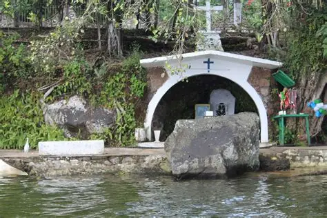

En el corazón de la selva veracruzana, a orillas de una laguna mística, se encuentra Catemaco, la capital mundial de la brujería. Cada primer viernes de marzo, la energía de este lugar se transforma para recibir el "Aquelarre", una congregación masiva de brujos blancos y negros que se reúnen en el Cerro del Mono para realizar rituales de purificación, pactos y limpias espirituales.
La tradición cuenta que estas tierras son un punto de convergencia magnética donde las fuerzas de la naturaleza y el inframundo se tocan. Durante la noche del Aquelarre, el aire se llena de olor a copal, hierbabuena y aguardiente, mientras las fogatas iluminan los rostros de aquellos que buscan poder, salud o la resolución de deudas de sangre.
El punto más crítico de la celebración ocurre en la oscuridad profunda del bosque, donde los "Brujos Mayores" presiden misas negras y ceremonias secretas. Se dice que en estos aquelarres se invoca a entidades antiguas para renovar los dones de adivinación y curación. Los escépticos lo llaman folclore, pero quienes han caminado por Catemaco en esa fecha aseguran que el peso del aire cambia y que los susurros entre los árboles no pertenecen a ningún viento conocido.
Para el visitante común, Catemaco ofrece sanación; pero para el iniciado, es el lugar donde se entrega el alma a cambio de conocimiento oculto. No es solo una fiesta, es el recordatorio de que en México, la magia antigua nunca murió, solo aprendió a esconderse entre los juncos de la laguna.